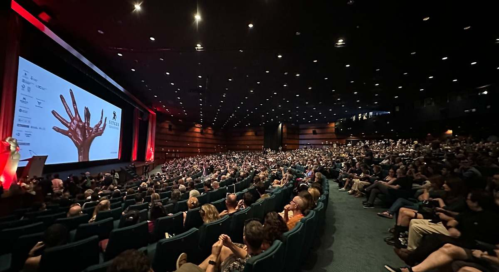

Las 5 mejores películas españolas 2024
Esta temporada son muchos los trabajos que parten de relatos o libros para componer historias de lo más personales que los autores cinematográficos se encargan de llevar a su terreno para insuflarles su propia personalidad.
Talento e innovación en el festival de cine fantástico por excelencia
El Festival Internacional de Cine Fantástico de Catalunya vuelve a convertir a la ciudad de Sitges en el escaparate de referencia para el talento emergente y las grandes producciones del género hasta el próximo 13 de octubre.
Detrás del monumental descalabro de 'Joker 2':
Joker 2 se descalabra con cifras muy inferiores a las esperadas. ¿Qué ha pasado con el film de Todd Phillips, mucho más caro que su predecesor?